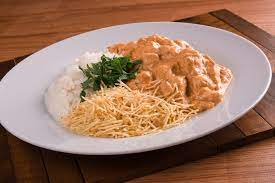

Strogonoff

modo de preparo
- Em um recipiente, junte o Fermento com 1 xícara (chá) de água e ½ xícara (chá) de farinha
- Misture bem para dissolver o fermento.
- Adicione o restante da água, o sal, o açúcar e o óleo.
- Aos poucos, acrescente o restante da farinha e sove bem até a massa ficar lisa e homogênea.
- Cubra e deixe crescer até dobrar de volume
- Sove novamente, divida a massa em 6 porções e forme bolas.
- Cubra e deixe descansar por mais 30 minutos.
- Abra cada porção no formato de um disco, coloque em assadeiras redondas e espalhe um pouco de molho de tomate.
- Asse em forno médio (180ºC), preaquecido, por 15 minutos, ou até as bordas dourarem levemente.
- Retire do forno, espalhe mais um pouco de molho de tomate, polvilhe a muçarela e o orégano, e regue com o azeite.
- Volte ao forno por mais 15 minutos, ou até derreter o queijo.
- Sirva quente.
Ingredientes
| Qtd | ingredientes |
|---|---|
| 1 | envelope de Fermento Biológico Seco (10g) |
| 2 | xícaras (chá) de água |
| 1 | kg de Farinha de Trigo |
| 2 | colheres (chá) de sal |
| 2 | colheres (sopa) de açúcar |
| ¼ | xícara (chá) de óleo |
| 2 | colheres (chá) de sal |
| 1 | Cobertura |
| 1 | 1 xícara (chá) de molho de tomate |
| 1 | Queijo muçarela ralado a gosto |
| 1 | Orégano e azeite de oliva a gosto |